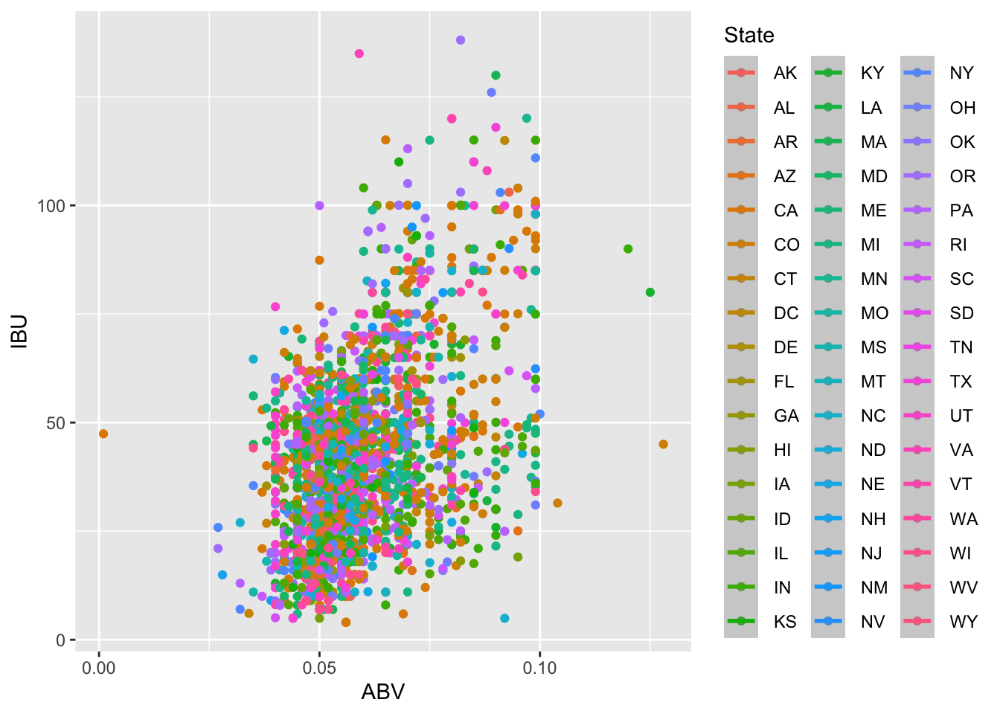
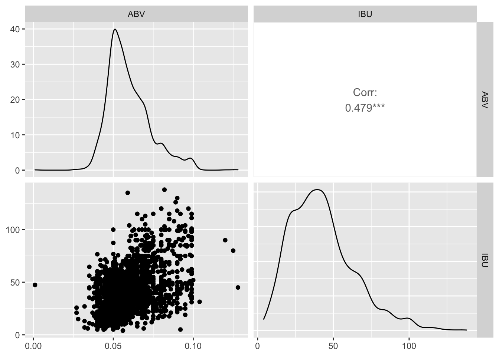

Beer Study Notebook
# Beer Study
library(dlookr)
library(visdat)
library(plotly)
library(missRanger)
library(ggplot2)
library(magrittr)
library(ranger)
library(dplyr)
library(class)
library(caret)
library(e1071)
library(GGally)
library(stringi)
library(stringr)
library(xgboost)
library(car)
library(Matrix)
library(keras)
library(forecast)
library(neuralnet)This is to add in all of the librarys we are using for the code.
Beers = read.csv('/Users/ZacharyHarris/Desktop/MS Data Science/MSDS_6306_Doing-Data-Science-Master/Unit 8 and 9 Case Study 1/Beers.csv')
Breweries = read.csv('/Users/ZacharyHarris/Desktop/MS Data Science/MSDS_6306_Doing-Data-Science-Master/Unit 8 and 9 Case Study 1/Breweries.csv')
Breweries = Breweries %>% filter(!is.na(Name))
Beers2 = Beers
JoinedData_Unclean = left_join(Beers2,Breweries,bu = c("Brewery_id" = "Brew_ID"))## Joining, by = "Name"Beers2$IBU = imputate_na(Beers,IBU,ABV, method = "mice") # Filling in Missing IBU##
## iter imp variable
## 1 1 IBU
## 1 2 IBU
## 1 3 IBU
## 1 4 IBU
## 1 5 IBU
## 2 1 IBU
## 2 2 IBU
## 2 3 IBU
## 2 4 IBU
## 2 5 IBU
## 3 1 IBU
## 3 2 IBU
## 3 3 IBU
## 3 4 IBU
## 3 5 IBU
## 4 1 IBU
## 4 2 IBU
## 4 3 IBU
## 4 4 IBU
## 4 5 IBU
## 5 1 IBU
## 5 2 IBU
## 5 3 IBU
## 5 4 IBU
## 5 5 IBU## Warning: Number of logged events: 2Beers2$ABV = imputate_na(Beers,ABV,IBU, method = "mice") # Filling in Missing ABV##
## iter imp variable
## 1 1 ABV
## 1 2 ABV
## 1 3 ABV
## 1 4 ABV
## 1 5 ABV
## 2 1 ABV
## 2 2 ABV
## 2 3 ABV
## 2 4 ABV
## 2 5 ABV
## 3 1 ABV
## 3 2 ABV
## 3 3 ABV
## 3 4 ABV
## 3 5 ABV
## 4 1 ABV
## 4 2 ABV
## 4 3 ABV
## 4 4 ABV
## 4 5 ABV
## 5 1 ABV
## 5 2 ABV
## 5 3 ABV
## 5 4 ABV
## 5 5 ABV## Warning: Number of logged events: 2JoinedData = left_join(Beers2,Breweries,by = c("Brewery_id" = "Brew_ID"))This is to load, join, and fill in missing data from both the breweries and the beers data set.We had used the imputate.na() function to fill in the missing data with projections as opposed to random numbers.
head(JoinedData, 6)tail(JoinedData, 6)#plot_na_pareto(JoinedData, only_na = TRUE)
#plot_na_intersect(JoinedData)
#vis_miss(JoinedData)We are now looking to make sure that we didn’t miss any of the data points and we have a solid block of data.
Medians = JoinedData %>% group_by(State) %>% summarize(median_ABV = median(ABV),median_IBU = median(IBU)) #Defining Medians
Medians %>% ggplot(aes(x = median_ABV, fill = State)) + geom_histogram() #Plotting Medians## `stat_bin()` using `bins = 30`. Pick better value with `binwidth`.
JoinedData[which.max(JoinedData$IBU),] %>% select(State) #Max IBU by stateJoinedData[which.max(JoinedData$ABV),] %>% select(State) #Max ABV by stateNow we are looking at the Joined Data to determine which state has the highest IBU and ABV.
summary(JoinedData) # Summary of Data## * Impute missing values based on Multivariate Imputation by Chained Equations
## - method : mice
## - random seed : 68374
##
## * Information of Imputation (before vs after)
## Original Imputation
## n 2.348000e+03 2.410000e+03
## na 6.200000e+01 0.000000e+00
## mean 5.977342e-02 5.977726e-02
## sd 1.354173e-02 1.339723e-02
## se_mean 2.794636e-04 2.729018e-04
## IQR 1.700000e-02 1.700000e-02
## skewness 9.584771e-01 9.646093e-01
## kurtosis 1.144937e+00 1.216499e+00
## p00 1.000000e-03 1.000000e-03
## p01 3.847000e-02 3.900000e-02
## p05 4.200000e-02 4.200000e-02
## p10 4.500000e-02 4.590000e-02
## p20 5.000000e-02 5.000000e-02
## p25 5.000000e-02 5.000000e-02
## p30 5.100000e-02 5.100000e-02
## p40 5.400000e-02 5.460000e-02
## p50 5.600000e-02 5.700000e-02
## p60 6.000000e-02 6.000000e-02
## p70 6.500000e-02 6.500000e-02
## p75 6.700000e-02 6.700000e-02
## p80 7.000000e-02 7.000000e-02
## p90 8.000000e-02 8.000000e-02
## p95 8.700000e-02 8.700000e-02
## p99 9.900000e-02 9.900000e-02
## p100 1.280000e-01 1.280000e-01
## * Impute missing values based on Multivariate Imputation by Chained Equations
## - method : mice
## - random seed : 65993
##
## * Information of Imputation (before vs after)
## Original Imputation
## n 1405.0000000 2410.0000000
## na 1005.0000000 0.0000000
## mean 42.7131673 42.6302075
## sd 25.9540659 21.2278970
## se_mean 0.6924162 0.4324127
## IQR 43.0000000 27.0000000
## skewness 0.7925209 0.8801903
## kurtosis -0.1357120 0.8717980
## p00 4.0000000 4.0000000
## p01 7.0000000 8.0000000
## p05 11.0000000 15.0000000
## p10 15.0000000 18.0000000
## p20 20.0000000 24.0000000
## p25 21.0000000 27.0000000
## p30 24.0000000 30.0000000
## p40 30.0000000 35.0000000
## p50 35.0000000 40.0000000
## p60 44.0000000 45.0000000
## p70 55.0000000 50.0000000
## p75 64.0000000 54.0000000
## p80 68.0000000 60.0000000
## p90 80.0000000 70.0000000
## p95 92.0000000 85.0000000
## p99 110.9600000 102.8200000
## p100 138.0000000 138.0000000## Name.x Beer_ID ABV.Original ABV.Imputation IBU.Original IBU.Imputation
## Length:2410 Min. : 1.0 2.348000e+03 2.410000e+03 1405.0000000 2410.0000000
## Class :character 1st Qu.: 808.2 6.200000e+01 0.000000e+00 1005.0000000 0.0000000
## Mode :character Median :1453.5 5.977342e-02 5.977726e-02 42.7131673 42.6302075
## Mean :1431.1 1.354173e-02 1.339723e-02 25.9540659 21.2278970
## 3rd Qu.:2075.8 2.794636e-04 2.729018e-04 0.6924162 0.4324127
## Max. :2692.0 1.700000e-02 1.700000e-02 43.0000000 27.0000000
## 9.584771e-01 9.646093e-01 0.7925209 0.8801903
## 1.144937e+00 1.216499e+00 -0.1357120 0.8717980
## 1.000000e-03 1.000000e-03 4.0000000 4.0000000
## 3.847000e-02 3.900000e-02 7.0000000 8.0000000
## 4.200000e-02 4.200000e-02 11.0000000 15.0000000
## 4.500000e-02 4.590000e-02 15.0000000 18.0000000
## 5.000000e-02 5.000000e-02 20.0000000 24.0000000
## 5.000000e-02 5.000000e-02 21.0000000 27.0000000
## 5.100000e-02 5.100000e-02 24.0000000 30.0000000
## 5.400000e-02 5.460000e-02 30.0000000 35.0000000
## 5.600000e-02 5.700000e-02 35.0000000 40.0000000
## 6.000000e-02 6.000000e-02 44.0000000 45.0000000
## 6.500000e-02 6.500000e-02 55.0000000 50.0000000
## 6.700000e-02 6.700000e-02 64.0000000 54.0000000
## 7.000000e-02 7.000000e-02 68.0000000 60.0000000
## 8.000000e-02 8.000000e-02 80.0000000 70.0000000
## 8.700000e-02 8.700000e-02 92.0000000 85.0000000
## 9.900000e-02 9.900000e-02 110.9600000 102.8200000
## 1.280000e-01 1.280000e-01 138.0000000 138.0000000
## Brewery_id Style Ounces Name.y City
## Min. : 1.0 Length:2410 Min. : 8.40 Length:2410 Length:2410
## 1st Qu.: 94.0 Class :character 1st Qu.:12.00 Class :character Class :character
## Median :206.0 Mode :character Median :12.00 Mode :character Mode :character
## Mean :232.7 Mean :13.59
## 3rd Qu.:367.0 3rd Qu.:16.00
## Max. :558.0 Max. :32.00
##
##
##
##
##
##
##
##
##
##
##
##
##
##
##
##
##
##
##
## State
## Length:2410
## Class :character
## Mode :character
##
##
##
##
##
##
##
##
##
##
##
##
##
##
##
##
##
##
##
##
##
## JoinedData %>% ggplot(aes(x = ABV, y = IBU, color = State)) + geom_jitter() + geom_smooth() # Scatterplot## `geom_smooth()` using method = 'loess' and formula 'y ~ x'## Warning in simpleLoess(y, x, w, span, degree = degree, parametric = parametric, : span too small. fewer
## data values than degrees of freedom.## Warning in simpleLoess(y, x, w, span, degree = degree, parametric = parametric, : pseudoinverse used at
## 0.039895## Warning in simpleLoess(y, x, w, span, degree = degree, parametric = parametric, : neighborhood radius
## 0.012105## Warning in simpleLoess(y, x, w, span, degree = degree, parametric = parametric, : reciprocal condition
## number 0## Warning in simpleLoess(y, x, w, span, degree = degree, parametric = parametric, : There are other near
## singularities as well. 8.2901e-05## Warning in simpleLoess(y, x, w, span, degree = degree, parametric = parametric, : Chernobyl! trL>n 5
## Warning in simpleLoess(y, x, w, span, degree = degree, parametric = parametric, : Chernobyl! trL>n 5## Warning in sqrt(sum.squares/one.delta): NaNs produced## Warning in predLoess(object$y, object$x, newx = if (is.null(newdata)) object$x else if
## (is.data.frame(newdata)) as.matrix(model.frame(delete.response(terms(object)), : span too small. fewer
## data values than degrees of freedom.## Warning in predLoess(object$y, object$x, newx = if (is.null(newdata)) object$x else if
## (is.data.frame(newdata)) as.matrix(model.frame(delete.response(terms(object)), : pseudoinverse used at
## 0.039895## Warning in predLoess(object$y, object$x, newx = if (is.null(newdata)) object$x else if
## (is.data.frame(newdata)) as.matrix(model.frame(delete.response(terms(object)), : neighborhood radius
## 0.012105## Warning in predLoess(object$y, object$x, newx = if (is.null(newdata)) object$x else if
## (is.data.frame(newdata)) as.matrix(model.frame(delete.response(terms(object)), : reciprocal condition
## number 0## Warning in predLoess(object$y, object$x, newx = if (is.null(newdata)) object$x else if
## (is.data.frame(newdata)) as.matrix(model.frame(delete.response(terms(object)), : There are other near
## singularities as well. 8.2901e-05## Warning in stats::qt(level/2 + 0.5, pred$df): NaNs produced## Warning in simpleLoess(y, x, w, span, degree = degree, parametric = parametric, : span too small. fewer
## data values than degrees of freedom.## Warning in simpleLoess(y, x, w, span, degree = degree, parametric = parametric, : at 0.054974## Warning in simpleLoess(y, x, w, span, degree = degree, parametric = parametric, : radius 6.76e-10## Warning in simpleLoess(y, x, w, span, degree = degree, parametric = parametric, : all data on boundary of
## neighborhood. make span bigger## Warning in simpleLoess(y, x, w, span, degree = degree, parametric = parametric, : pseudoinverse used at
## 0.054974## Warning in simpleLoess(y, x, w, span, degree = degree, parametric = parametric, : neighborhood radius
## 2.6e-05## Warning in simpleLoess(y, x, w, span, degree = degree, parametric = parametric, : reciprocal condition
## number 1## Warning in simpleLoess(y, x, w, span, degree = degree, parametric = parametric, : at 0.060226## Warning in simpleLoess(y, x, w, span, degree = degree, parametric = parametric, : radius 6.76e-10## Warning in simpleLoess(y, x, w, span, degree = degree, parametric = parametric, : all data on boundary of
## neighborhood. make span bigger## Warning in simpleLoess(y, x, w, span, degree = degree, parametric = parametric, : There are other near
## singularities as well. 6.76e-10## Warning in simpleLoess(y, x, w, span, degree = degree, parametric = parametric, : zero-width neighborhood.
## make span bigger
## Warning in simpleLoess(y, x, w, span, degree = degree, parametric = parametric, : zero-width neighborhood.
## make span bigger## Warning: Computation failed in `stat_smooth()`:
## NA/NaN/Inf in foreign function call (arg 5)## Warning in (function (kind = NULL, normal.kind = NULL, sample.kind = NULL) : non-uniform 'Rounding'
## sampler used
JoinedData %>% select(ABV,IBU) %>% ggpairs() # Deriving Correlation